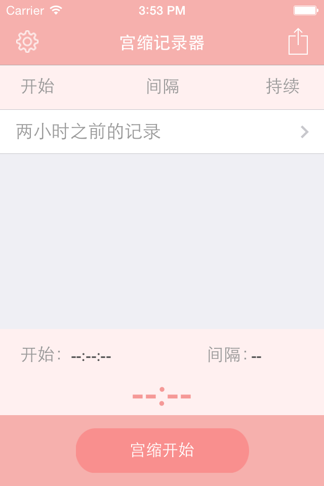
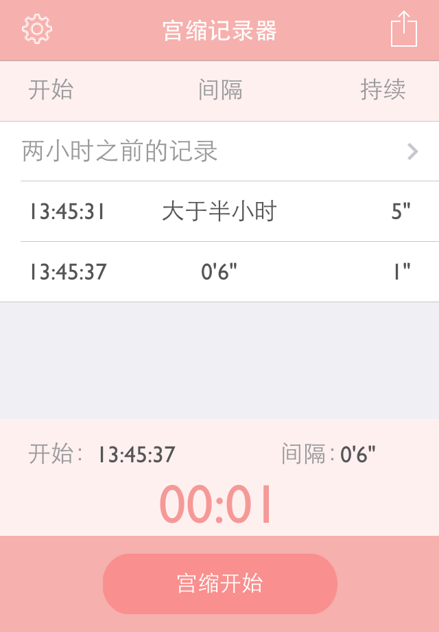
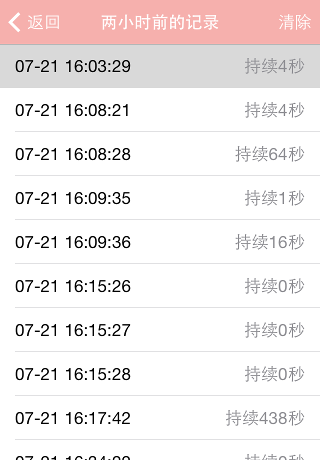
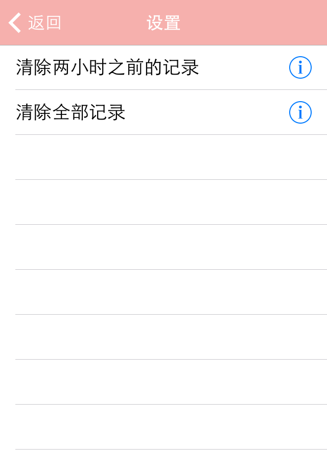

简介
宫缩记录器APP致力于帮助准妈妈在分娩前记录宫缩情况，用以判断何时就医。
界面清新简洁，没有无关功能干扰准妈妈的判断！
使用说明
启动后界面如下
宫缩开始时，点击“宫缩开始”。宫缩结束时，点击“宫缩结束”，即可记录宫缩间隔和宫缩时长。
两小时之前的宫缩记录通常没有什么参考价值了，所以会自动归入“两小时前的记录”。
在“设置”中，可以清除之前的记录。
App使用过程中，可以随时退出或关闭App，所有的数据不会丢失，再次启动可以继续使用。
联系方式
对App有任何的问题和建议，都欢迎联系作者。 huoyong119@126.com
感谢你的关注！